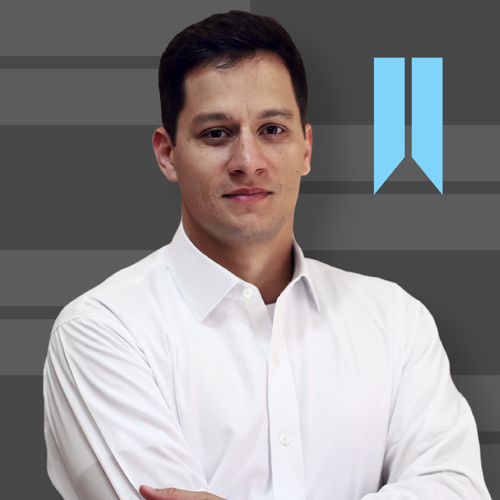

Mato Grosso do Sul merece um governador que entende de economia, planejamento e gestão pública com responsabilidade e visão de futuro. Dados reais, propostas concretas.
Sem jargão técnico. Sem promessa vazia. O que você e sua família vão sentir na vida real.
71% dos municípios do MS têm mais da metade das estradas de chão. Quem mora no interior sabe o custo disso na colheita, no acesso ao médico, na escola dos filhos. Isso vai mudar.
Mais de 35% dos moradores do MS não têm cobertura de atenção básica. O estado tem dinheiro — falta gestão. Vamos levar saúde de qualidade a cada canto do estado.
O orçamento estadual é seu dinheiro. Você tem direito de saber onde ele vai. Vamos publicar tudo em linguagem simples — cada real investido, cada obra entregue.

Com uma visão técnica e humanizada, acredito que boas políticas públicas nascem do conhecimento profundo da economia local, da escuta ativa das comunidades e de um plano de governo sólido e transparente. No Instagram como @economistarenato, traduzo os números do orçamento estadual em linguagem acessível para qualquer cidadão.
Para muitos sul-mato-grossenses, esta candidatura pode significar algo além de uma troca de gestão — pode ser o começo de uma refundação do estado: uma nova forma de governar, fundada em esperança real, não em promessas vazias de sempre.
Me inspiro em grandes líderes católicos da história que colocaram a fé e a razão a serviço de seus povos: Carlos Magno, que unificou a Europa cristã; Carlos V, defensor da cristandade ocidental; Gabriel Garcia Moreno, estadista ecuatoriano que construiu um estado fundado nos princípios católicos; e outros líderes que, cada um em seu tempo e contexto histórico, buscaram governar segundo os princípios do Evangelho e da tradição cristã.
A dívida pública e os juros abusivos são mecanismos de escravização econômica. Defendo uma política de crédito justa, acessível e que sirva ao povo — não ao sistema financeiro.
Quem ganha mais deve contribuir proporcionalmente mais. Uma política tributária progressiva é condição mínima de justiça social e alívio para quem vive do trabalho.
MS tem sol, biomassa, gás e potencial hídrico. Não podemos depender de energia cara e importada. Vamos construir uma matriz energética própria, barata e soberana para o estado.
MS contribui muito e recebe pouco. Vamos renegociar com a União a compensação justa pelas medidas desequilibradas que penalizam nosso estado — do ICMS às transferências fiscais.
Dados reais das finanças públicas, infraestrutura, saúde, segurança e agronegócio de Mato Grosso do Sul. Fontes oficiais, atualizados via Python.
Os assuntos que mais impactam o cotidiano do sul-mato-grossense — com dados e análises do @economistarenato.
Análises de governança em breve — acompanhe o @economistarenato.
O desenvolvimento passa por gestão pública responsável, investimento em pessoas, geração de empregos e respeito ao meio ambiente.
Atrair investimentos, gerar empregos de qualidade e diversificar a economia, com política fiscal responsável e transparente.
Valorizar professores, ampliar o acesso à educação técnica e superior, e preparar nossa juventude para o mercado do futuro.
Garantir acesso universal à saúde pública de qualidade em todos os municípios, com atenção especial ao interior do estado.
Preservar o Pantanal e os biomas locais, promovendo o desenvolvimento sustentável e o ecoturismo como alavanca econômica.
Investir em estradas, saneamento básico, habitação e conectividade para todos os sul-mato-grossenses, priorizando o interior.
Administração pública honesta, com metas publicadas, resultados auditados e participação da sociedade civil nas decisões.
Cada proposta nasce de dados reais sobre a situação do estado. Não são promessas genéricas — são compromissos técnicos com metas verificáveis.
Execução real da LOA com acompanhamento bimestral público. RREO e RGF em linguagem acessível. Meta: resultado primário positivo nos 4 anos de mandato.
Criar zonas de incentivo fiscal para atrair empresas de tecnologia, logística e indústria. Diversificar a matriz econômica gerando empregos qualificados no interior.
Plano estadual de pavimentação para os 79 municípios. Parceria com DNIT e recursos do PAC. Meta: 100% de acesso pavimentado ao perímetro urbano até 2030.
Estruturar a saúde por macrorregiões. Ampliar cobertura de atenção básica de 64% para 85% em 4 anos. Nenhum sul-mato-grossense precisa sair do estado para tratamentos de média complexidade.
Criar o Fundo Estadual de Proteção do Pantanal, combater desmatamento e incêndios criminosos, e transformar a biodiversidade em oportunidade de ecoturismo e bioeconomia.
MS é o 6º estado mais violento do Brasil e tem 1.500 km de fronteira seca. Isso muda com dados, estratégia e integração — não apenas retórica.
Esta é uma campanha construída pelas pessoas, para as pessoas. Seu apoio é fundamental para levarmos este projeto a cada canto do estado.
Compartilhe nossa mensagem nas redes sociais e com seus amigos e família.
Faça parte da nossa equipe de voluntários e ajude a construir essa campanha.
Participe de eventos, debates e encontros pela transformação do estado.
Tem sugestões, quer participar ou tirar dúvidas? Nossa equipe está pronta para ouvir você.
Campo Grande – Mato Grosso do Sul, Brasil